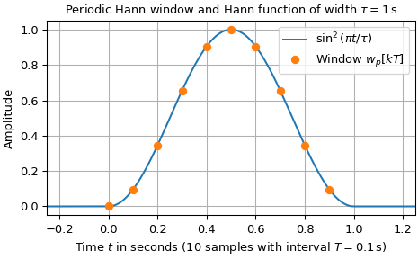
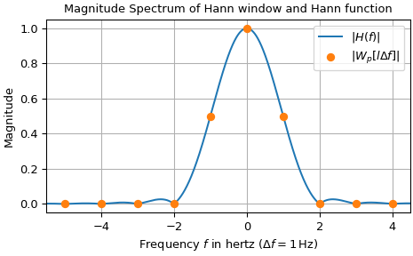
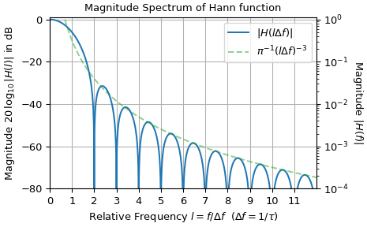

hann#
- scipy.signal.windows.hann(M, sym=True, *, xp=None, device=None)[source]#
Return a Hann window.
The Hann window is a taper formed by using a raised cosine or sine-squared with ends that touch zero.
- Parameters:
- Mint
Number of points in the output window. If zero, an empty array is returned. An exception is thrown when it is negative.
- symbool, optional
When
True(default), generates a symmetric window, for use in filter design. WhenFalse, generates a periodic window, for use in spectral analysis.- xparray_namespace, optional
Optional array namespace. Should be compatible with the array API standard, or supported by array-api-compat. Default:
numpy- deviceany
optional device specification for output. Should match one of the supported device specification in
xp.
- Returns:
- wndarray
The window, with the maximum value normalized to 1 (though the value 1 does not appear if M is even and sym is
True).
Notes
The symmetric \(M\)-point Hann window is defined as
\[w_s[k] = \frac{1}{2} - \frac{1}{2} \cos\left(\frac{2\pi k}{M-1}\right) = \sin^2\left(\frac{\pi k}{M-1}\right) \,, \qquad 0 \leq k < M \,,\]whereas the periodic \(M\)-point Hann window is given by
\[w_p[k] = \frac{1}{2} - \frac{1}{2} \cos\left(\frac{2\pi k}{M}\right) = \sin^2\left(\frac{\pi k}{M}\right) \,, \qquad 0 \leq k < M \,.\]The window was named for Julius von Hann, an Austrian meteorologist. It is also known as the Cosine Bell. It is sometimes erroneously referred to as the “Hanning” window, from the use of “hann” as a verb in the original paper and confusion with the very similar Hamming window.
Most references to the Hann window come from the signal processing literature, where it is used as one of many windowing functions for smoothing values. It is also known as an apodization (which means “removing the foot”, i.e., smoothing discontinuities at the beginning and end of the sampled signal) or tapering function.
The corresponding continuous-time function is given by
\[\begin{split}h(t) = \begin{cases} \cos^2\left(\frac{\pi t}{\tau}\right) & \text{for } |t| \leq \tau/2 \,,\\ 0 & \text{otherwise, } \end{cases}\end{split}\]which is centered at \(t=0\) and has the width of \(\tau = MT\). Here, \(T\) denotes the sampling interval. Its Fourier transform can be expressed by
\[H(f) = -\frac{\operatorname{sinc}(f\tau)}{ \tau (f- \frac{1}{\tau}) (f + \frac{1}{\tau})} \,,\]with \(\operatorname{sinc}(f) := \sin(\pi f) / (\pi f)\). Eq. (4) in the The Discrete Fourier Transform section of the SciPy User Guide can be used to determine the values of the discrete Fourier transform (aka FFT), i.e.,
\[W_p[l] := \frac{1}{T\gamma} H(l\Delta f) = -\frac{M}{\gamma} \frac{\operatorname{sinc}(l)}{(l - 1)(l + 1)} \,, \qquad \Delta f := 1 / \tau = 1/ (MT) \,.\]Here, \(\gamma\) is the FFT normalization constant (default: \(\gamma=1\)). For \(l \in\mathbb{Z}\), the values of \(W_p\) are given by: \(W_p[0] = M/\gamma\), \(W_p[l\rightarrow \pm 1] = M/(2\gamma)\) and \(W_p[l] = 0\) for \(|l| \geq 2\). The height of the sidelobes decreases on the order of \(O(|l|^{-3})\).
For many applications, like calculating a magnitude spectrum in the example below, a normalized window is needed. Consult the Spectral Analysis section of the SciPy User Guide for details.
Array API Standard Support
hannhas support for Python Array API Standard compatible backends in addition to NumPy. The following combinations of backend and device (or other capability) are supported.Library
CPU
GPU
NumPy
✅
n/a
CuPy
n/a
✅
PyTorch
✅
✅
JAX
✅
✅
Dask
✅
n/a
See Support for the array API standard for more information.
References
[1]Blackman, R.B. and Tukey, J.W., (1958) The measurement of power spectra, Dover Publications, New York.
[2]E.R. Kanasewich, “Time Sequence Analysis in Geophysics”, The University of Alberta Press, 1975, pp. 106-108.
[3]Wikipedia, “Window function”, https://en.wikipedia.org/wiki/Window_function
[4]W.H. Press, B.P. Flannery, S.A. Teukolsky, and W.T. Vetterling, “Numerical Recipes”, Cambridge University Press, 1986, page 425.
Examples
The following example compares the magnitude spectra of a periodic 10-point Hann window to its continuous-time counterpart.
>>> import numpy as np >>> from matplotlib import pyplot as plt >>> from scipy.fft import fft, fftfreq >>> from scipy.signal.windows import hann ... >>> M, T = 10, 1/10 # number of samples and sampling interval in seconds >>> k, tau = np.arange(M) * T, M*T # sample times and window width in seconds ... >>> w_k = hann(M, sym=False) # periodic hann window >>> W, f_W = fft(w_k) / sum(w_k), fftfreq(M, T) # amplitude spectrum of w_k ... >>> # Hann function and its Fourier transform: >>> t = np.linspace(-.25, M*T+.25, 200, endpoint=True) >>> h = np.where(np.logical_and(0 < t, t < 1), np.sin(np.pi * t / tau) ** 2, 0) ... >>> f = np.linspace(-6, 12., 1801, endpoint=True) >>> H, ii0 = np.zeros_like(f), abs(f * tau) != 1 >>> H[ii0] = np.sinc(f[ii0] * tau) / ((f[ii0] * tau + 1) * (f[ii0] * tau - 1)) >>> H[~ii0] = 0.5 # value when denominator is zero ... >>> ii1 = np.logical_and(min(f_W) - 0.5 <= f, f < max(f_W) + 0.5) >>> H_abs, f_abs, H1, f_dB = abs(H[ii1]), f[ii1], abs(H[f>=0]), f[f>=0] >>> H_dB = np.where(~np.logical_and(f_dB>=2, np.mod(f_dB, 1)==0), ... 20*np.log10(H1), -1e250) ... >>> ax0, ax1, ax2 = (plt.subplots(num=n_, constrained_layout=True)[1] ... for n_ in range(3)) >>> ax0.set_title(r"Periodic Hann window and Hann function of width $\tau=1\,$s") >>> ax0.set(ylabel="Amplitude", xlim=(t[0], t[-1]), ... xlabel=rf"Time $t$ in seconds (${M}$ samples with interval ${T=}\,$s)") >>> ax0.plot(t, h, 'C0-', label=r"$\sin^2(\pi t / \tau)$") >>> ax0.plot(k, w_k, 'C1o', label="Window $w_p[kT]$") >>> ax1.set_title(r"Magnitude Spectrum of Hann window and Hann function") >>> ax1.set(ylabel="Magnitude", xlim=(f_abs[0], f_abs[-1]), ... xlabel=rf"Frequency $f$ in hertz ($\Delta f = {f_W[1]:g}\,$Hz)") >>> ax1.plot(f_abs, H_abs, 'C0-', label="$|H(f)|$") >>> ax1.plot(f_W, abs(W), 'C1o', label=r"$|W_p[l\Delta f]|$") >>> ax2.set_title(r"Magnitude Spectrum of Hann function") >>> ax2.set(ylabel=r"Magnitude $20\,\log_{10} |H(l)|$ in dB", ... xlabel=r"Relative Frequency $l=f/\Delta f\ $ ($\Delta f = 1/\tau$)", ... xlim=(f_dB[0], f_dB[-1]), ylim=(-80, 1), ... yticks=20*np.arange(-4, 1), xticks=np.arange(12)) >>> ax2a = ax2.twinx() # create right y-axis with non-logarithmic scaling: >>> ax2a.set_ylabel("Magnitude $|H(f)|$", rotation=-90, labelpad=15) >>> ax2a.set(ylim=(1e-4, 10 ** (1 / 20)), yscale="log") >>> ax2.plot(f_dB, H_dB, 'C0-', label=r"$|H(l\Delta f)|$") >>> ax2.plot(f_dB[f_dB>0.5], -60*np.log10(f_dB[f_dB>0.5]) - 20*np.log10(np.pi), ... 'C2--', alpha=0.5, label=r"$\pi^{-1} (l\Delta f)^{-3}$") >>> for ax_ in (ax0, ax1, ax2): ... ax_.legend(loc='best') ... ax_.grid(True) >>> plt.show()



The plot of the logarithmically scaled magnitude spectrum illustrates that its zeros are at integers with absolute value ≥ 2 and that the sidelobes decrease on the order of \(O(|f|^{-3})\), which corresponds to -60 dB per frequency decade.